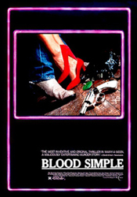
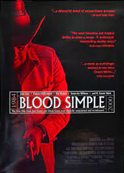
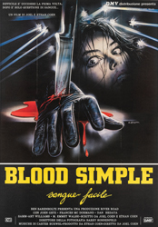
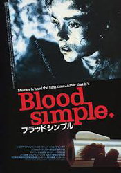

Barry Sonnenfeld
Julian Marty, a bar-owner in Texas is certain that his wife is cheating on him and hires a private detective to spy on her. The private detective, Lorren Visser, is able to obtain photographic evidence that Marty's wife, Abby, and one of his bartenders, Ray, are having an affair. When Ray and Abby realise that Marty has found out about them, it allows them to plan for their future while Marty, in turn, decides to hire Visser once again, this time to kill Abby and Ray, and dispose of their bodies so that they won't be found. This is the beginning of a complex plot full of misunderstandings and murder and leads to a stand-off of sorts between the four players, which is compounded in complexity by wrong assumptions of the situation, with an innocent bystander, another of the Marty's bartenders - Meurice, unwittingly adding to the scenario.
It was the directorial debut of the Coen Brothers and the first major film of cinematographer Barry Sonnenfeld, who later became a director, as well as the feature-film debut of Joel Coen's wife, McDormand, who went on to star in many of his features. The film's title derives from the Dashiell Hammett novel Red Harvest (1929), in which the term "blood simple" describes the addled, fearful mind-set of people after prolonged immersion in violent situations. Stylistically, the film has been noted for its blending elements of neo-noir, pulp crime stories and low-budget horror films.
After writing the screenplay, the Coen Brothers - neither of whom had any prior experience in filmmaking - shot a pre-emptive dummy theatrical trailer for the film, which showed "a man dragging a shovel alongside a car stopped in the middle of the road, back towards another man he was going to kill" and "a shot of backlit gun holes in a wall". The trailer featured actor Bruce Campbell, playing the Julian Marty role, and was shot by recent film school graduate Barry Sonnenfeld. After completing the trailer, the Coens began exhibiting it with the hope of convincing investors to help fund the full-length feature film.
Daniel Bacaner was one of the first people to invest money in the project. He also became its executive producer and introduced the Coens to other potential backers. The entire process of raising the necessary $1.5 million took a year.
The film was shot in several locations in the towns of Austin and Hutto, Texas over a period of 8 weeks in the Autumn of 1982. The film spent a year in post-production and was completed by 1983. Blood Simple was Frances McDormand's screen debut. All Coen brothers films are co-produced and co-directed by Joel and Ethan Coen, although Ethan was credited as the sole producer and Joel the sole director until 2004. The Coens share editing credit under the pseudonym Roderick Jaynes.



